Vaidoso, mas inegavelmente talentoso, Kai retornou com um poderoso retrabalho que o torna mais letal do que nunca. Este mago do Caos não apenas devasta inimigos com pilares de fogo ardente e bombas mágicas explosivas, como também se sustenta com vampirismo aprimorado.
Com sua relíquia em mãos, o novo Kai torna-se imparável — uma verdadeira força de destruição na Linha do Meio. Jogadores ansiosos para dominar seu potencial vão encontrá-lo brilhando ainda mais ao lado de heróis como Dorian, Galahad e K’arkh. Pronto para liberar o renascido Mago do Caos?
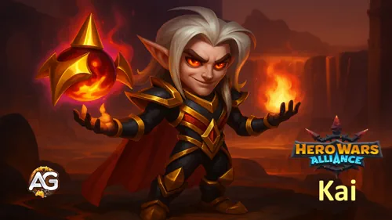
Guia do Kai - Hero Wars Alliance, um jogo desenvolvido pela Nexters.
Quem é Kai?
Kai é um mago do Caos que prospera na Linha do Meio, equilibrando alto dano mágico com sustentação através do vampirismo. Seu retrabalho o transformou em uma potência estratégica, capaz de virar batalhas com feitiços devastadores em área e nova durabilidade.
Classe do Glifo: Mago
Posição: Linha do Meio
Atributo Principal: Inteligência
Facção: Caos
Como obter Pedras da Alma: Loja da Torre, Baú Heroico
Lista de Nível contra a Hidra: Suporte de dano intermediário
A maior força de Kai está em sua habilidade de mesclar ataque e sustentação. Seu retrabalho não apenas aumenta seu poder mágico bruto, mas também concede cura própria aprimorada, permitindo que ele permaneça mais tempo na luta.
Quando combinado com amplificadores de roubo de vida como Dorian, ou com tanques como Galahad, Kai se torna uma máquina incansável de dano. Sua sinergia com K’arkh também o torna uma escolha de destaque em equipes de explosão.
Seja avançando na Torre ou subindo no ranking da Arena, dominar as habilidades retrabalhadas de Kai dará a você uma grande vantagem. Ele não é mais apenas um mago situacional — agora é um causador de dano confiável e um verdadeiro jogador de equipe em Hero Wars Alliance.
Prós e Contras do Kai - Hero Wars Alliance
✅ Prós
Alto Dano Mágico: Forte causador de dano com escalonamento de Poder Mágico e glifos de Penetração Mágica.
Impacto do Ultimate: O Manto do Viajante fornece um poderoso dano explosivo à equipe inimiga.
Habilidade Passiva de Vampirismo: 120% de Vampirismo aumentam sua sobrevivência e sustentação durante as batalhas.
Interrompe Habilidades Inimigas: Seu efeito de arremesso ao ar pode atrapalhar as habilidades dos inimigos.
Bom Potencial de Combo: Funciona bem com heróis como K’arkh para combos devastadores.
Escala Bem: Glifos e artefatos de Inteligência aumentam sua efetividade geral conforme evolui.
❌ Contras
Frágil: Pode ser eliminado rapidamente se for focado, mesmo com glifos de vida.
Dependente de Equipe: Precisa de proteção dos aliados para liberar todo seu potencial de dano.
Facilmente Neutralizado: Times com Andvari podem contra-atacá-lo de forma eficaz, reduzindo seu impacto.
Não Aplica Debuffs: Carece de habilidades de redução adicionais, limitando sua utilidade contra algumas equipes.
Baixa Prioridade em Defesa Mágica: Vulnerável a magos inimigos devido a glifos defensivos mais fracos.
Prioridade de Evolução das Habilidades da Relíquia Lendária de Kai - Hero Wars Alliance
Descubra a melhor ordem para evoluir as habilidades de Kai após seu retrabalho em Hero Wars Alliance, explicada passo a passo para todos os jogadores.
1ª – Grilhões do Vento
Lança um furacão que arremessa inimigos para o alto e causa dano: Dano: 156791 (80% Atq. Mág. + 18100).
No início, o efeito de controle ajuda a interromper inimigos, mas contra oponentes de alto nível sua confiabilidade cai.
Prioridade de Evolução:Média – Útil para controle de grupo, mas o dano e a eficácia diminuem em níveis mais altos.
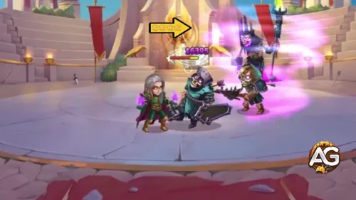
Grilhões do Vento, Hero Wars Alliance.
Nota Importante: A habilidade suprema de Kai, Grilhões do Vento, não recebeu melhoria de Relíquia durante o retrabalho. Diferente da maioria dos heróis, cuja suprema é a habilidade mais forte, a de Kai recebeu apenas um pequeno buff. Em vez disso, as novas Relíquias focam em aprimorar suas habilidades secundárias, principalmente mirando inimigos na linha do meio. Embora isso adicione mais pressão ofensiva, deixa Kai vulnerável a proteções de deslocamento de heróis como Andvari, que pode anular completamente seu controle de arremesso. Essa escolha de design torna o retrabalho um tanto questionável, já que a habilidade mais importante de Kai permaneceu praticamente inalterada, levantando dúvidas sobre sua eficácia a longo prazo contra fortes contra-ataques.
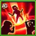
2ª – Sopro do Abismo
Cria um pilar de fogo no centro da equipe inimiga, queimando-os. Dano Mágico: 116018 (60% Atq. Mág. + 12000).
Prioridade de Evolução:Muito Alta – Esta é a principal fonte de dano em área de Kai. Melhorá-la cedo maximiza a pressão nas lutas em equipe.
Sopro do Abismo, Hero Wars Alliance.
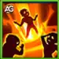
2ª – Relíquia Lendária Aprimorada: Sopro do Abismo
Cria um segundo pilar de fogo no mesmo local. Dano Mágico: 58009 (30% Atq. Mág. + 6000).
Prioridade de Evolução:Muito Alta – Dobrar o ataque transforma Kai em um mago destrutivo capaz de dizimar equipes.
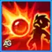
3ª – Esfera Explosiva
Lança uma esfera de fogo no inimigo com menor Defesa Mágica. Dano Mágico: 96432 (50% Atq. Mág. + 9750). Explosão: 182364 (Atq. Mág. + 9000).
Causa forte dano a um único alvo e pune inimigos agrupados.
Prioridade de Evolução:Alta – Excelente habilidade de explosão, especialmente contra heróis com baixa Defesa Mágica.
Adiciona o efeito Bomba Viva ao alvo. Ao morrer, ele explode e causa dano a todos os inimigos.
Prioridade de Evolução:Média Alta – A reação em cadeia é poderosa, mas situacional, dependendo do momento e da composição inimiga.
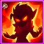
4ª – Vida Roubada
Habilidade passiva. Aumenta o vampirismo até 120%. Permite que Kai se cure enquanto causa dano aos inimigos.
Prioridade de Evolução:Alta – Mantém Kai vivo durante as batalhas, permitindo que continue lançando feitiços.
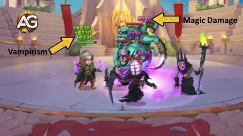
Vida Roubada, Hero Wars Alliance.
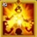
5ª – Relíquia Lendária: Bomba Viva
A cada 15s, aplica Bomba Viva a um inimigo: Dano: 317356 (50% da Vida).
Ao morrer, os alvos explodem, causando dano a todos os inimigos.
Prioridade de Evolução:Muito Alta – Esta relíquia vira lutas a favor de Kai ao desencadear explosões em cadeia pelo campo de batalha.
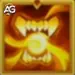
6ª – Relíquia Lendária: Impulso Sangrento
Cada vez que a vida é restaurada pelo vampirismo, o atributo principal do Herói aumenta por 5s (acumulando até 3x). Aumento de Atributo: 1734 (1% Atq. Mág.)
Prioridade de Evolução:Baixa – Bom para ganho extra de poder, mas menos impactante comparado às habilidades explosivas principais de Kai.
Melhor Skin para Kai – Hero Wars Alliance
Descubra a melhor ordem de skins do Kai em Hero Wars Alliance. Saiba quais skins evoluir primeiro para maximizar seu poder de batalha e impacto na equipe.
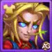
Skin+ Colheita (Ataque Mágico +21.300)
Essa é a skin ofensiva mais forte do Kai, aumentando massivamente seu Ataque Mágico e maximizando o impacto de todas as suas habilidades.
Prioridade de Evolução:Prioridade Máxima – A melhor skin para evoluir primeiro e alcançar o maior potencial de dano.
Skin Padrão (Inteligência +1.365)
Cada ponto de Inteligência concede ao Kai +3 de Ataque Mágico, +1 de Defesa Mágica e +1 de Ataque Físico, já que Inteligência é seu atributo principal. Essa skin fortalece todas as suas habilidades ao aumentar diretamente seu atributo base.
Prioridade de Evolução:Muito Alta – Ainda essencial, pois amplifica todas as partes do kit do Kai.
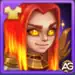
Skin Solar (Penetração Mágica +10.650)
A Penetração Mágica ajuda o Kai a ignorar a Defesa Mágica inimiga, garantindo que seus pilares de fogo e orbes causem dano consistente contra equipes mais resistentes.
Prioridade de Evolução:Alta – Uma excelente skin secundária para aumentar o dano, especialmente em PvP contra tanques ou inimigos resistentes à magia.
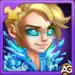
Skin de Inverno (Ataque Mágico +10.665)
Essa skin oferece um aumento direto no Ataque Mágico, fortalecendo o dano de suas habilidades, em especial Respiração do Abismo e Esfera Explosiva.
Prioridade de Evolução:Média-Alta – Uma boa opção para aumentar o dano, mas menos valiosa que Penetração Mágica quando os inimigos acumulam defesa.
Skin de Campeão (Vida +106.871)
Essa skin melhora bastante a sobrevivência do Kai. Mais vida permite que ele aproveite melhor o vampirismo e resista em lutas prolongadas.
Prioridade de Evolução:Média – Útil se o Kai morrer rápido nas batalhas, mas não tão impactante quanto as skins focadas em dano.
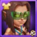
Skin de Praia (Defesa Mágica +10.650)
Essa skin reduz o dano recebido de magos inimigos. Tem valor situacional, mas não aumenta diretamente o papel ofensivo do Kai.
Prioridade de Evolução:Baixa – Só vale a pena evoluir se você enfrentar muitas equipes focadas em magos; caso contrário, priorize skins ofensivas e de atributo principal.
Kai com skin de Verão, Hero Wars Alliance.
Prioridade de Evolução dos Artefatos do Kai em Hero Wars Alliance
Entender a prioridade de evolução dos artefatos do Kai em Hero Wars Alliance é essencial para maximizar seu dano mágico e suporte ao time. Seus artefatos aumentam o impacto do seu ultimate, a penetração mágica e atributos principais, mas nem todos têm o mesmo valor em batalha. Abaixo está a ordem correta de prioridade com explicações.
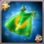
1º – Artefato de Arma: Manto do Andarilho
É ativado sempre que Kai usa seu ultimate, concedendo um poderoso aumento de Ataque Mágico para todo o time por 9 segundos.
Atributos: Ataque Mágico +21.360.
Chance de Ativação: 100%.
Este artefato está diretamente ligado à sua habilidade mais forte e beneficia o DPS de todo o time, tornando-o seu artefato mais valioso.
Prioridade de Evolução:Muito Alta – Priorize este primeiro, pois aumenta o poder ofensivo de Kai e de seus aliados sempre que o ultimate é usado.
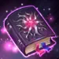
2º – Artefato de Livro: Manuscrito do Vazio
Aumenta tanto a Penetração Mágica quanto o Ataque Mágico, garantindo que Kai consiga atravessar a Defesa Mágica inimiga.
Atributos: Penetração Mágica +10.680; Ataque Mágico +5.340.
Essencial para que Kai permaneça eficaz contra tanques de alta defesa e times resistentes à magia.
Prioridade de Evolução:Alta – Evolua após a arma, já que penetração é crítica para manter o dano consistente em PvP e campanhas avançadas.
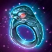
3º – Artefato de Anel: Anel da Inteligência
Aumenta o atributo principal de Kai, Inteligência, que aumenta passivamente seu poder mágico.
Atributos: Inteligência +3.990.
Cada ponto de Inteligência concede a Kai +3 Ataque Mágico, +1 Defesa Mágica e +1 Ataque Físico. Embora útil, tem menos impacto imediato em batalha se comparado aos dois primeiros artefatos.
Prioridade de Evolução:Média – Fornece bom crescimento, mas deve ser o último a evoluir, já que seu impacto é mais lento e individual, não em equipe.
Prioridade de Evolução dos Glifos do Kai
A prioridade de glifos do Kai em Hero Wars Alliance é focada em maximizar o dano do ultimate e de suas habilidades. Ataque Mágico e Penetração são cruciais, enquanto glifos de sobrevivência ajudam a mantê-lo vivo por mais tempo. Abaixo está a ordem correta de importância com as razões de cada escolha.
1º – Glifo de Ataque Mágico
Aumenta o dano bruto de todas as habilidades de Kai, especialmente seu ultimate, que é sua habilidade mais impactante.
Nível 80: Ataque Mágico +12.850.
Prioridade de Evolução:Muito Alta – Essencial para o papel de Kai como causador de dano mágico, deve sempre ser o primeiro a ser evoluído.
2º – Glifo de Penetração Mágica
Garante que as habilidades de Kai ignorem a Defesa Mágica inimiga, mantendo sua eficácia contra heróis resistentes e times com alta defesa mágica.
Nível 80: Penetração Mágica +12.850.
Prioridade de Evolução:Alta – Deve ser evoluído logo após o Ataque Mágico para manter o dano consistente no fim de jogo e em batalhas PvP.
3º – Glifo de Inteligência
Aumenta o atributo principal de Kai, escalando seu Ataque Mágico, Defesa Mágica e até um pouco de Ataque Físico.
Nível 80: Inteligência +2.110.
Prioridade de Evolução:Média – Importante para crescimento geral, mas menos urgente do que os glifos de dano direto.
4º – Glifo de Vida
Aumenta a sobrevivência ao ampliar os pontos de vida, ajudando Kai a resistir a explosões e permanecer vivo para usar seu ultimate.
Nível 80: Vida +122.800.
Prioridade de Evolução:Média-Baixa – Útil para manter Kai vivo, mas não tão impactante quanto aumentar seu poder ofensivo.
5º – Glifo de Defesa Mágica
Aumenta a resistência contra dano mágico, oferecendo proteção situacional contra times cheios de magos.
Nível 80: Defesa Mágica +12.850.
Prioridade de Evolução:Baixa – Última prioridade, já que Kai se beneficia mais de atributos ofensivos e de sobrevivência geral do que apenas resistência mágica.
Análise dos Talismãs de Kai em Hero Wars Alliance
O Talismã de Kai é uma peça essencial para aumentar suas estatísticas e melhorar seu desempenho em batalha. Com o talismã certo, Kai pode fortalecer seu ataque mágico e penetração mágica, aumentando assim seu poder de dano contra inimigos em Hero Wars Alliance.
Talismã da Direção (Primeiro Talismã)
Este Talismã oferece a Kai um aumento em Inteligência, Ataque Mágico e Defesa Mágica.
Esses bônus melhoram sua capacidade mágica e resiliência contra magos inimigos.
Talismã da Direção
Slot
Estatística
Pontos
0
Inteligência
+2.000
1
Ataque Mágico
+6.000
2
Ataque Mágico
+6.000
3
Ataque Mágico
+6.000
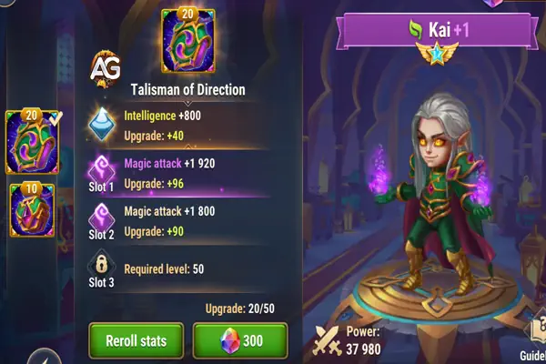
Kai com o Talismã da Direção, Hero Wars.
O Talismã da Direção é, portanto, mais defensivo, ajudando Kai a mitigar danos mágicos recebidos, ao mesmo tempo em que melhora suas capacidades ofensivas por meio da magia.
Talismã da Ambição (Segundo Talismã)
O segundo Talismã se concentra em Penetração Mágica e Armadura. A Penetração Mágica permite que Kai cause muito mais dano ao ignorar as defesas mágicas dos inimigos, tornando este Talismã mais ofensivo.
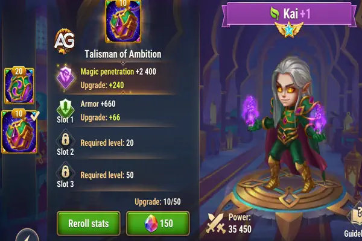
Kai com o Talismã da Ambição, Hero Wars.
Além disso, o aumento na Armadura melhora a sobrevivência de Kai contra causadores de dano físico, tornando-o uma melhor escolha contra equipes que dependem de atacantes físicos.
Sinergia com K'arkh
A principal vantagem do Talismã da Ambição está na sua Penetração Mágica, que proporciona uma sinergia significativa com K'arkh, especialmente contra equipes que incluem Andvari. Andvari é frequentemente usado para contra-atacar os ataques de lançamento de K'arkh, então emparelhar Kai com K'arkh ajuda a eliminar Andvari de forma mais eficaz.
A penetração mágica de Kai pode atravessar as defesas de Andvari, permitindo que K'arkh siga com seus devastadores ataques físicos. Esta combinação funciona bem para desmantelar equipes que dependem de proteção física, dando a K'arkh um caminho mais fácil para dominar o campo de batalha.
Como os Talismãs de Kai Melhoram Seu Papel
Em resumo, embora Kai não se torne um herói de primeira linha com os novos Talismãs, o Talismã da Ambição se destaca quando usado ao lado de K'arkh, especialmente contra equipes com Andvari. A sinergia entre a penetração mágica de Kai e o dano físico de K'arkh os torna uma dupla formidável em certos confrontos PvP.
Kai vs Hidras
Kai não é um grande herói contra hidras, mas sua habilidade de vampirismo pode fazê-lo manter-se vivo por mais tempo contra as hidras.
Também é possível criar um combo de Kai + Dorian + Orion nas hidras, pois o bônus de ataque magico do Kai em combinação com perfuração mágica de Orion podem causar um bom dano.
Vídeo: Segredos da Reformulação de Kai: Melhores Equipes Reveladas! | Hero Wars Alliance
Conclusão - Kai Hero Wars Alliance
Kai é um mago de alto dano cuja força está em sua habilidade suprema, Vampirismo, e em poderosos combos mágicos com aliados como K’arkh.
Embora possa atrapalhar as habilidades inimigas e causar danos devastadores, sua sobrevivência e dependência da equipe tornam o posicionamento e a estratégia cruciais.
Focar na evolução de seu Poder Mágico, Penetração e glifos principais maximizará sua efetividade, mas os jogadores devem estar atentos a contra-ataques de equipes com Andvari.
Com o suporte adequado e os artefatos corretos, Kai pode dominar as batalhas na linha do meio e ser um contribuinte essencial em uma composição de equipe focada em magia.
Sobre o autor
Alexandre Domingos é pós-graduado em Engenharia e atua como Supervisor de Produção. Nas horas vagas, se aventura como youtuber e blogueiro no Alexandre Games, unindo sua paixão por tecnologia e estratégia com o mundo dos games. Desde os 5 anos mergulha nesse universo, jogando em plataformas clássicas como MSX, Master System, Nintendo e até em um velho PC 286. Desde 2019, Alexandre também joga Hero Wars e Mobile Legends, entre outros jogos mobile, criando guias, tutoriais e análises para a comunidade.
Sugestões de Vídeo:
Vídeo: Kai Rework Hero Wars Alliance – Vale a pena investir nas novas Relíquias?
Você gostou do nosso Guia do Kai Rework para Hero Wars Mobile? Há algo que não entendeu ou gostaria de sugerir mudanças? Convidamos você a se juntar à nossa sessão de comentários na página do Alexandre Games Blog. Não hesite em expressar sua opinião, clarificar suas dúvidas e compartilhar sua sugestões. Clique no botão abaixo para começar:


 Guia da Nebula Hero Wars Mobile
Guia da Nebula Hero Wars Mobile